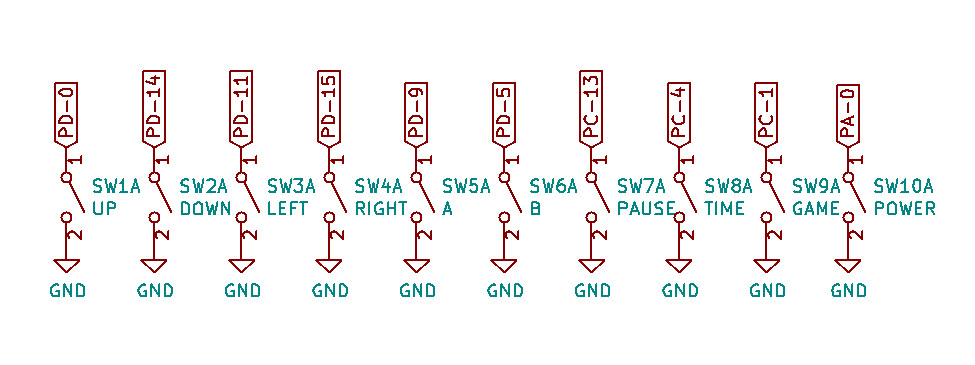
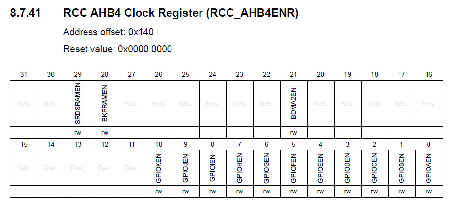
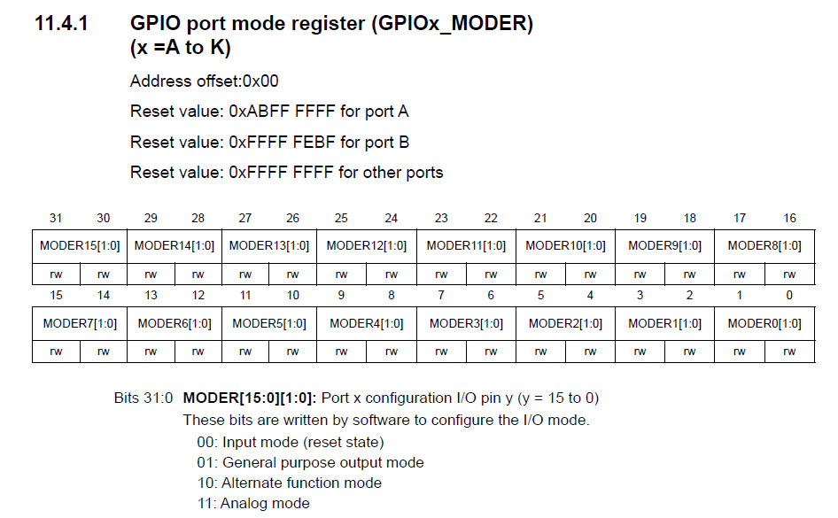
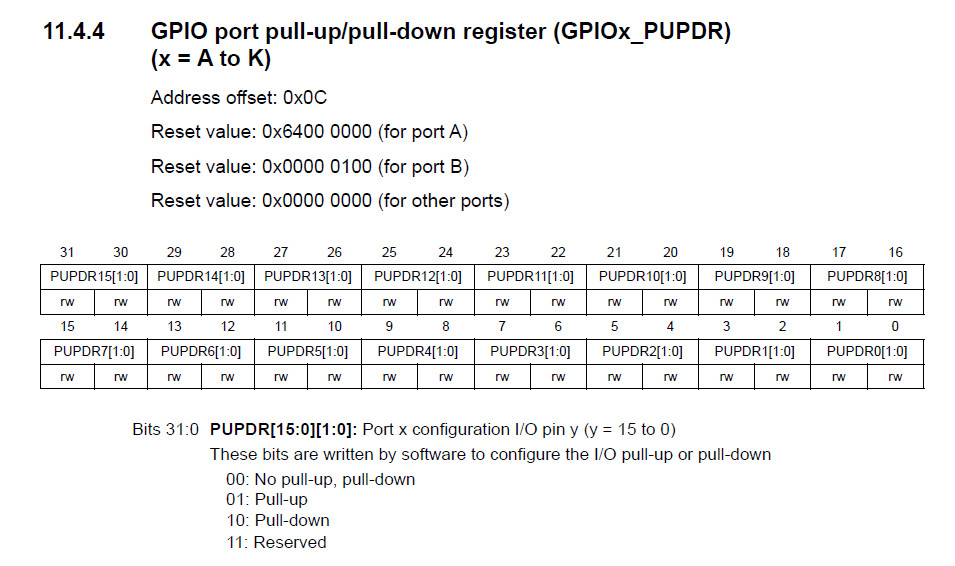
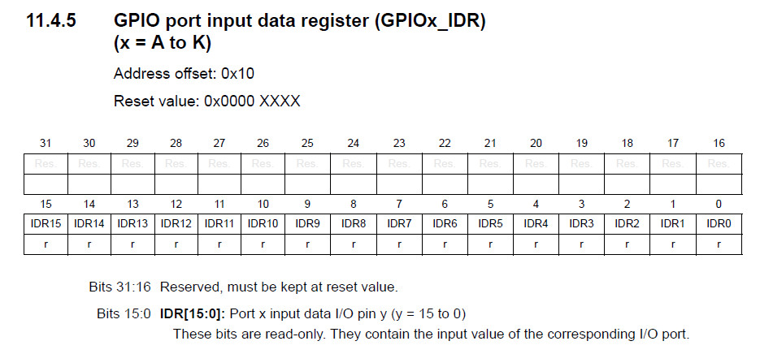
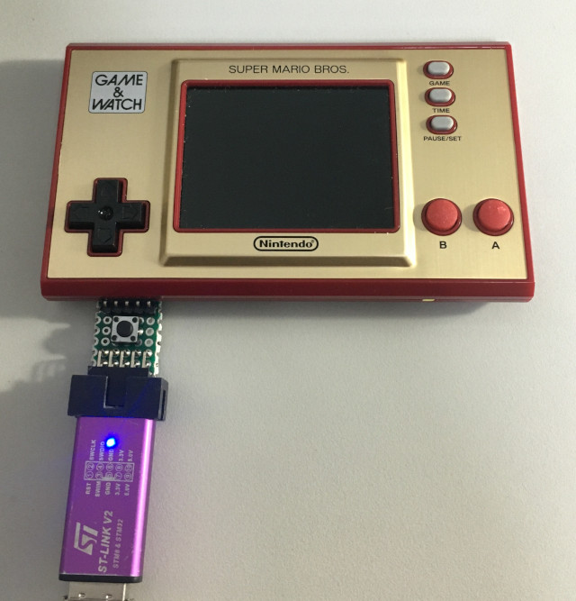
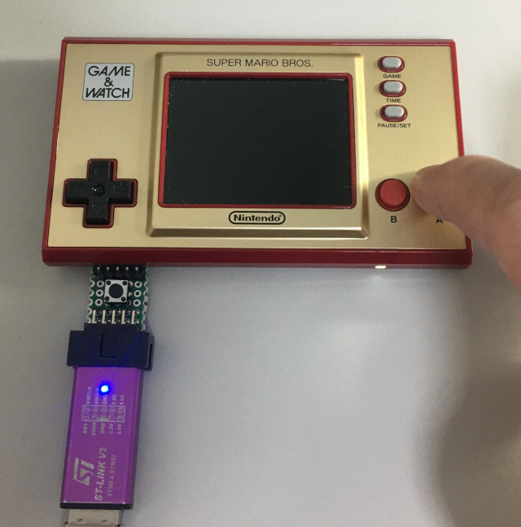

參考資訊：
https://github.com/ghidraninja/game-and-watch-backup
https://www.st.com/resource/en/datasheet/stm32h7b0vb.pdf
https://www.st.com/resource/en/reference_manual/dm00463927-stm32h7a37b3-and-stm32h7b0-value-line-advanced-armbased-32bit-mcus-stmicroelectronics.pdf
按鍵腳位





.equiv PORTD_BASE, 0x58020c00
.equiv PORTE_BASE, 0x58021000
.equiv GPIO_MODER, 0x0000
.equiv GPIO_PUPDR, 0x000c
.equiv GPIO_IDR, 0x0010
.equiv GPIO_ODR, 0x0014
.equiv RCC_BASE, 0x58024400
.equiv RCC_AHB4ENR, 0x0140
.thumb
.cpu cortex-m7
.syntax unified
.global _start
.text
.org 0x0000
_start:
.word 0x20020000
.word reset
.org 0x0100
.thumb_func
reset:
ldr r0, =RCC_BASE
ldr r1, [r0, #RCC_AHB4ENR]
orr r1, #(1 << 4) | (1 << 3)
str r1, [r0, #RCC_AHB4ENR]
ldr r0, =PORTD_BASE
ldr r1, =0
str r1, [r0, #GPIO_MODER]
ldr r1, =(1 << 18)
str r1, [r0, #GPIO_PUPDR]
ldr r0, =PORTE_BASE
ldr r1, =(1 << 22)
str r1, [r0, #GPIO_MODER]
ldr r1, =(0 << 11)
str r1, [r0, #GPIO_ODR]
0:
ldr r0, =PORTD_BASE
ldr r1, [r0, #GPIO_IDR]
lsl r1, #2
ldr r0, =PORTE_BASE
str r1, [r0, #GPIO_ODR]
b 0b
.end
完成

